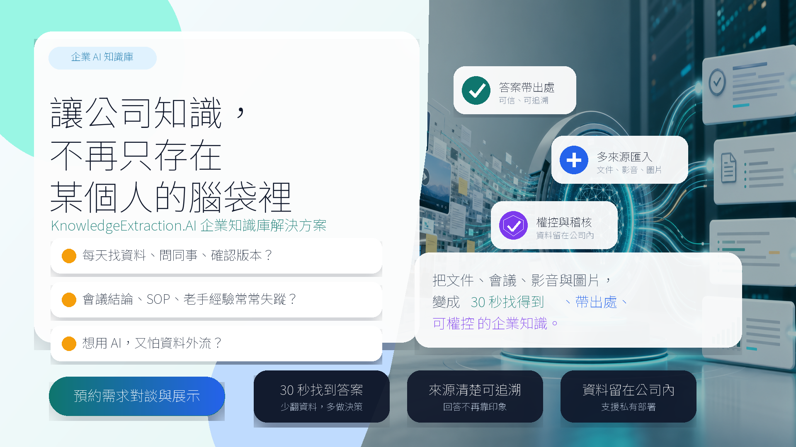
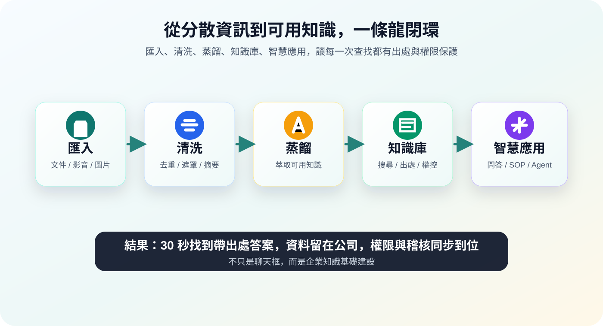

用 KnowledgeExtraction.AI，把文件、會議、影音與圖片變成 30 秒找得到、帶出處、可權控 的企業知識。

客戶每天不是缺資料，而是缺一個能把資料變成答案、把經驗留在公司、又不犧牲資安的方法。

產品定位摘要
KnowledgeExtraction.AI 是企業知識庫解決方案，協助企業把散落在文件、會議錄音錄影、影音、圖片與專案資料中的資訊，轉成可搜尋、可管理、可追溯、可權控的知識資產。
它不只是把檔案轉成文字，而是把「找資料、問同事、整理會議、擔心資料外流」這些每天都在消耗時間與成本的問題，變成可被系統化處理的知識閉環：匯入 → 清洗 → 蒸餾 → 知識庫 → 智慧應用。
Step 1：分析 5W
| 5W | 分析 |
|---|---|
| Who（誰需要） | 中小企業主、部門主管、專案經理、客服與業務團隊、顧問與教育訓練單位，以及重視資料自主、權限與合規的企業。 |
| When（什麼時間） | 每天找資料、會後整理、新人交接、SOP 查詢、客戶回覆、專案回顧、資深員工離職前後。 |
| Where（什麼場景） | 會議室、專案現場、客服中心、業務拜訪後、教育訓練、跨部門協作、內部稽核與知識管理流程。 |
| Why（為什麼需要） | 資訊分散、版本不明、整理耗時、知識依附個人、決策缺乏出處、雲端 AI 有資料外流疑慮。 |
| What（獲得什麼好處） | 30 秒取得帶出處答案、降低重工、加速新人上手、保留專家知識、支援地端或私有部署、延續團隊權控與稽核。 |
Step 2：20 句廣告標語
- 會後 30 秒找結論，主管不用再問三個人。
- 新人第一天問助理，老手經驗不再被打斷。
- 客服回覆前先查出處，答案一致又不外洩。
- 專案資料散各處，一句話找回決策脈絡。
- 每天少翻一小時，團隊把時間還給執行。
- 老手離職前，把腦中經驗留下給新人。
- 會議錄音進系統，待辦與結論不再失蹤。
- 想用 AI 又怕外流，知識留在公司內查。
- 業務拜訪後即整理，客戶需求不再靠記憶。
- SOP 問一句就找到，新人少問老手少忙。
- 部門資料各自藏，權控知識庫讓答案可見。
- 稽核來時不用翻箱，來源紀錄一查就有。
- 每週會議再多，結論都能變成可查知識。
- 專案交接不再重來，歷史脈絡完整帶走。
- 文件影音圖片都進來，答案帶出處才可信。
- 客戶一問就能回，團隊不再找舊版話術。
- 主管決策前先查證，資料來源清楚可追溯。
- 資料不必上雲，也能讓 AI 幫你找答案。
- 跨部門協作少猜測，共用知識降低來回。
- 每天重複找資料，不如讓知識自己回話。
Step 3：高轉換版本
最有畫面感 3 句
| 標語 | 原因 |
|---|---|
| 會後 30 秒找結論，主管不用再問三個人。 | 直接把會議後找結論的焦躁感具象化，客戶很容易想到自己的團隊日常。 |
| 老手離職前，把腦中經驗留下給新人。 | 切中知識傳承痛點，畫面清楚，也帶出購買的時間壓力。 |
| 每天重複找資料，不如讓知識自己回話。 | 把反覆查找的疲憊轉成「知識主動可用」的未來畫面。 |
最能刺激購買 3 句
| 標語 | 原因 |
|---|---|
| 每天少翻一小時，團隊把時間還給執行。 | 直接連到 ROI，讓客戶把產品價值換算成工時與成本。 |
| 想用 AI 又怕外流，知識留在公司內查。 | 回應企業導入 AI 最大阻力之一，降低採購疑慮。 |
| 文件影音圖片都進來，答案帶出處才可信。 | 同時展示多來源匯入與出處可信度，適合促成 demo。 |
最適合社群廣告 3 句
| 標語 | 原因 |
|---|---|
| 會後 30 秒找結論，主管不用再問三個人。 | 句子短、場景強，適合搭配會議室圖片或短影音開頭。 |
| SOP 問一句就找到，新人少問老手少忙。 | 痛點明確且口語，容易讓主管與老手產生共鳴。 |
| 每天重複找資料，不如讓知識自己回話。 | 有記憶點，適合做社群貼文標題與互動式開場。 |
最適合官網首頁 3 句
| 標語 | 原因 |
|---|---|
| 文件影音圖片都進來，答案帶出處才可信。 | 清楚說明產品範圍與信任機制，適合作為首頁主訴求。 |
| 資料不必上雲，也能讓 AI 幫你找答案。 | 展現差異化與資安價值，適合企業買家第一眼理解。 |
| 部門資料各自藏，權控知識庫讓答案可見。 | 強調企業級權控與跨部門知識整合，符合 B2B 場景。 |
Step 4：不同風格改寫
1. 情感型
- 別讓老手一離職，團隊又回到從零開始。
- 把每場會議的努力，留下給下一次決策。
- 讓新人放心問，讓老手終於專心做事。
2. 理性型
- 將查找、整理、交接時間，轉成可量測效率。
- 以帶出處答案降低重工，讓決策有據可依。
- 用權控知識庫整合來源，減少跨部門溝通成本。
3. 痛點型
- 找不到最新資料，正在讓團隊每天重做。
- 會議有結論卻沒留存，下一週又重新討論。
- 知識只在少數人腦中，就是最大的營運風險。
4. 專業型
- 建立可追溯、可稽核、可權控的企業知識閉環。
- 將非結構化資料轉為可搜尋的知識資產。
- 從多來源匯入到智慧問答，完整支援企業知識管理。
5. 幽默型
- 別再問「那份檔案在哪」，讓 AI 先去找。
- 老手不是客服中心，SOP 交給知識助理回答。
- 會議不是魔法，結論不該開完就消失。
6. 高端型
- 為重視資料主權的企業，打造可信任的知識基礎建設。
- 讓決策不只更快，更有來源、權限與稽核。
- 把企業經驗沉澱為長期累積的競爭資產。
7. 社群爆款型
- 你以為員工在工作，其實他在找檔案。
- 每天都有人問同一題，這就是隱形成本。
- 公司最貴的知識，可能還躺在某個人的腦中。
8. 短影音開場型
- 你公司每天花多少時間找同一份資料？
- 如果老手明天離職，新人還接得起來嗎？
- 會議開完就忘？這套系統讓結論自己留下。
Step 5：廣告素材延伸
Facebook 廣告文案 5 版
- 你的團隊每天都在找資料、問同事、確認版本嗎？KnowledgeExtraction.AI 把文件、會議、影音與圖片整理成可搜尋的企業知識。問一句，30 秒得到帶出處答案，還能延續團隊權控與稽核。現在就預約需求對談與展示。
- 老手一忙，新人就卡住；主管一問，團隊又開始翻檔案。KnowledgeExtraction.AI 幫你把經驗、SOP、會議結論與專案紀錄留下來，變成新人問得到、團隊查得到、主管信得過的知識庫。
- 想導入 AI，卻擔心資料上雲外流？KnowledgeExtraction.AI 支援地端或私有部署，讓資料留在公司環境內，同時提供帶出處問答、權限控管與存取稽核。
- 會議很多，結論卻很難找？把錄音、影片、文件與圖片匯入 KnowledgeExtraction.AI，系統協助清洗、摘要、分類與知識化，讓每次討論都能沉澱成可查詢的企業資產。
- 企業最浪費的時間，常常不是做事，而是找資料。KnowledgeExtraction.AI 讓散落資訊變成 30 秒可查的知識，減少重工、加速交接，也讓決策有來源可追溯。
Instagram 貼文 5 版
- 每天找資料找半天？把文件、影音、會議與圖片交給 KnowledgeExtraction.AI，讓答案帶著出處回來。
- 老手的經驗，不該只留在腦袋裡。用知識庫留下 SOP、專案脈絡與客戶回覆。
- 會議開完不是結束，結論被找得到，才真的有價值。
- 想用 AI 又怕資料外流？讓知識留在公司內，答案由權限保護。
- 企業不是缺資料，是缺把資料變成答案的方法。
Google 廣告標題 5 版
- 企業知識庫與 AI 問答
- 30 秒找到帶出處答案
- 文件影音轉企業知識
- 可私有部署的 AI 知識庫
- SOP 與會議知識管理
EDM 主旨 5 版
- 你的團隊每天花多少時間找同一份資料？
- 老手離職前，先把關鍵知識留下來
- 會議結論不該開完就消失
- 想導入 AI，又不想把資料交出去？
- 把散落文件與影音變成可查的企業知識
Landing Page 主標題 5 版
- 把企業資訊，變成 30 秒找得到的知識。
- 讓文件、會議、影音與圖片，都能回答問題。
- 資料留在公司內，答案帶出處回來。
- 從分散資料到可信知識庫，一套完成。
- 讓老手經驗、會議結論與 SOP 不再流失。
短影音前 3 秒鉤子文案 5 版
- 你公司最貴的知識，可能還在某個人腦中。
- 如果找資料每天花一小時，一年會浪費多少？
- 會議開完就忘？這就是企業隱形成本。
- 想用 AI 卻怕資料外流？先看這個做法。
- 新人一直問老手，不是人的問題，是知識沒留下。
建議 CTA
先選一個高頻情境，例如「會議知識留存」「SOP 查詢」「新人交接」或「客服話術管理」，安排一次需求對談與展示。用一小組資料試跑，量測查找時間、整理工時與交接效率，再決定是否擴大導入。
KnowledgeExtraction.AI 讓知識成為企業的競爭力。
參考文件
哪些情境會用到這一份
- 知識庫系統銷售人員：我要在 30 秒內講清楚這是什麼